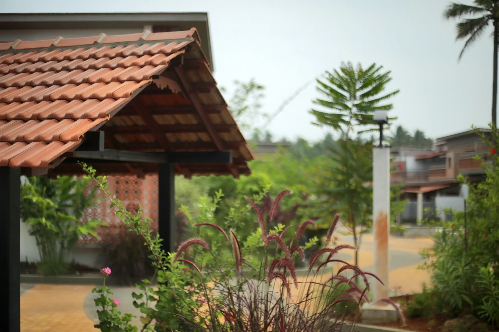

MaterialsAt GoodEarth Malhar, our townhouses use a double roofing system
GoodEarth – April 29, 2022
The double roof consists of a pitched concrete slab as bottom layer and a corrugated roof panel acting as a top layer. The double roof stands between the interior of the home and the exterior world serving as a barrier against heat, rain, noise and debris.
It acts as a good thermal insulator
A double roof system is an effective way to reduce both the conduction and convection heat transfer from a roof to the ceiling of a building. After the roof receives solar radiation heat, it heats up the air within the channel, creating naturally convective flows, and allowing the induced airflow to remove part of the heat transported into the interior, thus reducing the cooling load. This results in the house being cool in the heat of summer, and warm when the weather gets chilly—something made possible by its function as a good insulator for heat and cold.
Good for the environment
In addition to the benefits for a home, the double roofing system is also good for the environment in a number of ways.
- It contributes towards lesser energy consumption in the home due to its insulation effect minimizing or even negating the need for air conditioning to be switched on in summer and vice versa during winter.
- At a larger scale the reduced energy consumption in a single home multiplied manifold means that less air pollution and greenhouse gas emissions are created as a result.
- Its long life reduces the usage of building materials – overall contributing towards optimized materials usage.
Increases energy saving quotient of a home
Elaborating on the earlier thermal insulation points – a double roofing system is also an energy saver for your home. It ensures that the residents will be saving energy and money on heating and cooling costs—making the double roofing system a smart choice.
During extreme weather conditions, the double roofing system helps to keep the temperature regulated by trapping heat or cold which comes into contact with it. It is much like the way a thermos works, keeping hot liquids hot and cold liquids cold inside its chamber. By having this kind of insulation in your home, you can reduce using electricity to regulate the temperature which results in considerable saving because of less electricity used in regulation. In fact it has been noted that a double roofing system can reduce energy consumption by a massive 25% annually.
Offers protection against damage from the elements
This system requires lesser maintenance as it can withstand adverse climates. This makes them easy to use in structures built on any kind of geographical location. In addition to insulation from temperature, double roofs provide a great way to protect from other elements that degrade a home. Often lack of insulation and its repercussions can lead to problems such as mould growth due to condensation building up between surfaces which happens when warm air meets cool surfaces. Plus, the angle make it harder for precipitation and dirt particles that gather on terraces or get stuck in gutters.
Contributes towards rainwater harvesting
This type of roof makes it easier to reuse rainwater than flat roofs. The design ensures that one can channel and control the flow of rainwater much better than with a conventional terrace. The external drainage system is also easier to modify and redirect.
Double roofing systems are versatile – They require lesser maintenance, provide greater energy efficiency, thermal insulation, and overall contribute towards an overall better quality of life while also being good for the environment.